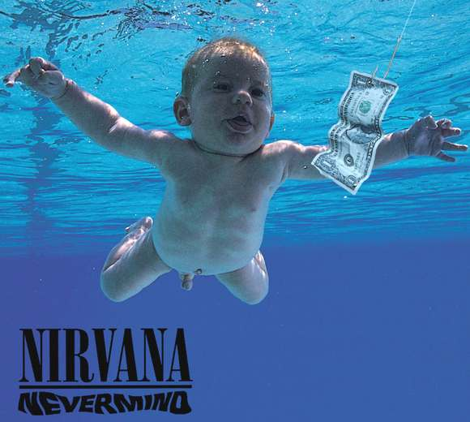
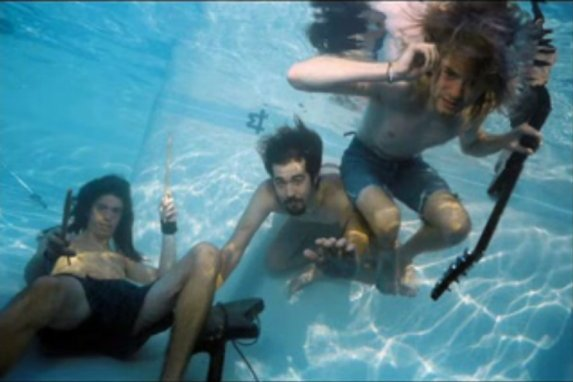
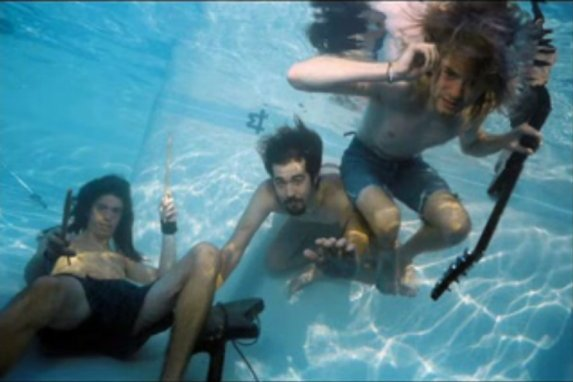
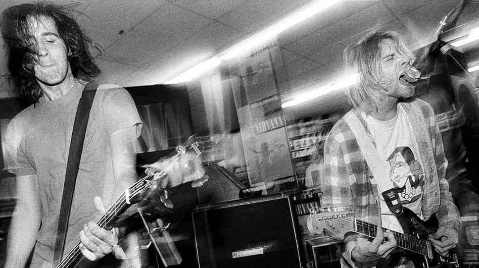
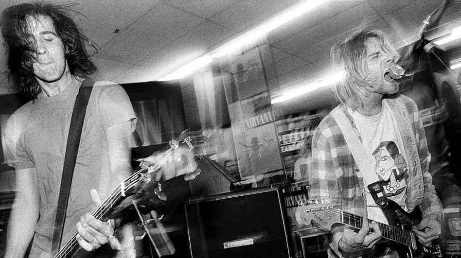

Bleach
Bleach is the debut studio album by the American rock band Nirvana, released in June 1989 through the independent record label Sub Pop. The main recording sessions took place at Reciprocal Recording in Seattle, Washington between December 1988 and January 1989. Bleach was well received by critics, but failed to chart in the U.S. upon its original release. The album was re-released internationally by Geffen Records in 1992 following the success of Nirvana's second album, Nevermind (1991). The re-release debuted at number 89 on the Billboard 200, and peaked at number 33 on the UK Albums Chart and 34 on the Australian albums chart. In 2009 Sub Pop released a 20th anniversary edition of Bleach featuring a live recording of a Nirvana show in Portland, Oregon from 1990 as extra material. Since its release in 1989, Bleach has sold over 1.7 million units in the United States alone. It is Sub Pop's best-selling release to date.
{kind=link}
Read the rest »
Nevermind
 Nevermind is the second studio album by the American rock band Nirvana, released on September 24, 1991. Produced by Butch Vig, Nevermind was the group's first release on DGC Records. Frontman Kurt Cobain sought to make music outside the restrictive confines of the Seattle grunge scene, drawing influence from groups such as the Pixies and their use of song volume dynamics. Despite low commercial expectations by the band and its record label, Nevermind became a surprise success in late 1991, largely due to the popularity of its first single, "Smells Like Teen Spirit". By January 1992, it had replaced Michael Jackson's album Dangerous at number one on the Billboard 200 chart. The album also produced three other successful singles: "Come as You Are", "Lithium", and "In Bloom". The Recording Industry Association of America has certified the album Diamond (over 10 million copies shipped), and the album has sold over 30 million copies worldwide. Nevermind was responsible for bringing alternative rock to a large mainstream audience, and has been ranked highly on lists of the greatest albums of all time by publications such as Rolling Stone and Time.
{kind=link}
Read the rest »
In Utero
 In Utero is the third and final studio album by the American grunge band Nirvana, released on September 13, 1993, on DGC Records. Nirvana intended the record to diverge significantly from the polished production of its previous album, Nevermind (1991). To capture a more abrasive and natural sound, the group hired producer Steve Albini to record In Utero during a two-week period in February 1993 at Pachyderm Studio in Cannon Falls, Minnesota. The music was recorded quickly with few studio embellishments, and the song lyrics and album packaging incorporated medical imagery that conveyed frontman Kurt Cobain's outlook on his publicized personal life and his band's newfound fame.
Soon after recording was completed, rumors circulated in the press that DGC might not release the album in its original state, as the record label felt that the result was not commercially viable. Although Nirvana publicly denied the statements, the group was not fully satisfied with the sound Albini had captured. Albini declined to alter the album further, and ultimately the band hired Scott Litt to make minor changes to the album's sound and remix the singles "Heart-Shaped Box" and "All Apologies".
Upon release, In Utero entered the Billboard 200 chart at number one and received critical acclaim as a drastic departure from Nevermind. The record has been certified five times platinum by the Recording Industry Association of America, and has sold 15 million copies worldwide
In Utero is the third and final studio album by the American grunge band Nirvana, released on September 13, 1993, on DGC Records. Nirvana intended the record to diverge significantly from the polished production of its previous album, Nevermind (1991). To capture a more abrasive and natural sound, the group hired producer Steve Albini to record In Utero during a two-week period in February 1993 at Pachyderm Studio in Cannon Falls, Minnesota. The music was recorded quickly with few studio embellishments, and the song lyrics and album packaging incorporated medical imagery that conveyed frontman Kurt Cobain's outlook on his publicized personal life and his band's newfound fame.
Soon after recording was completed, rumors circulated in the press that DGC might not release the album in its original state, as the record label felt that the result was not commercially viable. Although Nirvana publicly denied the statements, the group was not fully satisfied with the sound Albini had captured. Albini declined to alter the album further, and ultimately the band hired Scott Litt to make minor changes to the album's sound and remix the singles "Heart-Shaped Box" and "All Apologies".
Upon release, In Utero entered the Billboard 200 chart at number one and received critical acclaim as a drastic departure from Nevermind. The record has been certified five times platinum by the Recording Industry Association of America, and has sold 15 million copies worldwide
Read the rest »


 


 
